Префектура Яманаси · Хокуто · вино
RISONARE Yatsugatake: винный курорт у подножия Яцугатакэ и вина Domaine Mie Ikeno
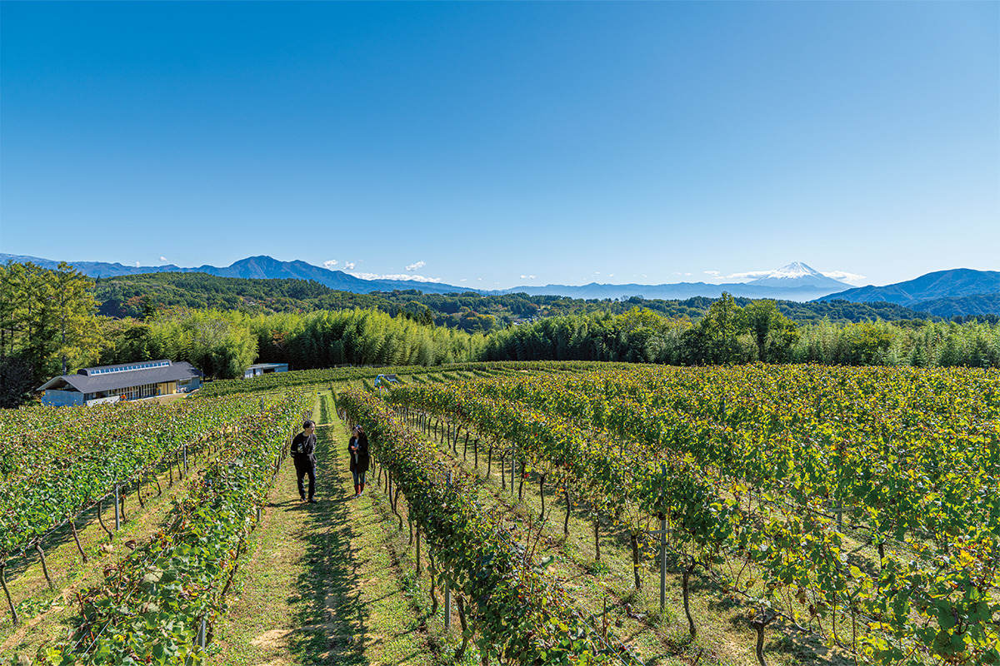
RISONARE Yatsugatake в Хокуто называет себя винным курортом и делает ставку на японское вино. Главная гордость отеля: вина соседнего хозяйства Domaine Mie Ikeno, которые раскупают почти сразу после выхода. В 2022 году сюда приехал винный эксперт, чтобы попробовать их на месте.
Виноградник
Вино из своих ягод
Хокуто лежит на северо-западе префектуры Яманаси, у самой границы с Нагано, на южных склонах горного массива Яцугатакэ. Здесь, в районе Кобутидзава, стоит курорт RISONARE Yatsugatake, а неподалёку на холмах растёт виноград хозяйства Domaine Mie Ikeno. Отель сотрудничает с ним с 2006 года: тогда он и стал винным курортом и с тех пор каждый сезон предлагает гостям особые винные программы.
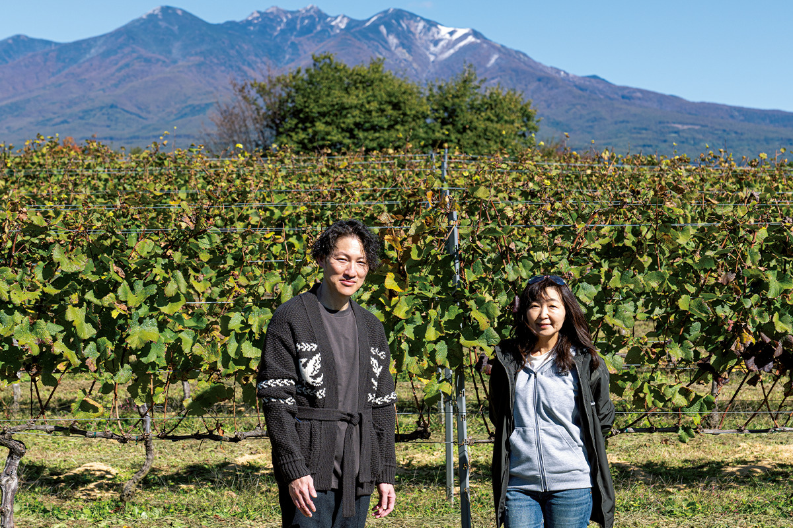
Вина Domaine Mie Ikeno делают только из винограда собственных виноградников. Строгие и при этом гибкие, они высоко ценятся и в Японии, и за рубежом, а новые выпуски раскупают за несколько десятков минут после начала продаж.
Свой визит винный эксперт начал с виноградника. Открытый холм смотрит на юго-запад на Южные Альпы, на юг на Фудзи и на север на Яцугатакэ. Здесь растут шардоне, пино нуар и мерло. Земля под ногами мягкая: обрезанные весной лозы, рисовую шелуху, органический навоз с соседней конной фермы и скошенную траву возвращают в почву. Зимой стволы лоз окучивают и обматывают греющими трубками. По словам эксперта, мало кто доводит такую тяжёлую работу до конца с таким упорством.
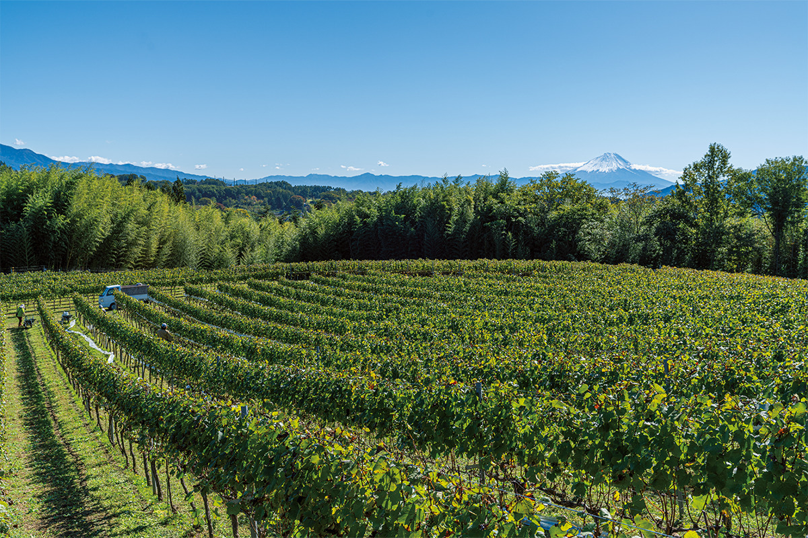
Миэ Икэно училась виноделию в Бургундии и первой в Японии применила систему гравитационного потока. Виноград давят и прессуют, и сок сам стекает этажом ниже в бродильные чаны. После брожения вино так же спускается ещё ниже, в бочки, и до самого розлива его перемещает только сила тяжести. В отличие от насосов, такой способ не травмирует ягоды и сохраняет тонкий характер вина. Бродит оно по возможности на диких дрожжах, долго выдерживается в бочках и не фильтруется.
«Через фильтр вино вышло бы чище. Но мне хочется, чтобы оно оставалось природным, без прикрас, со всеми его оттенками»
Миэ Икэно
В этих винах главный большой ритм природы, а вмешательство человека сведено к минимуму, и винодел каждый раз ищет между ними равновесие. К этим винам хорошо подходят слова эксперта: хорошее вино зовёт к себе вся природа той земли, где оно родилось.
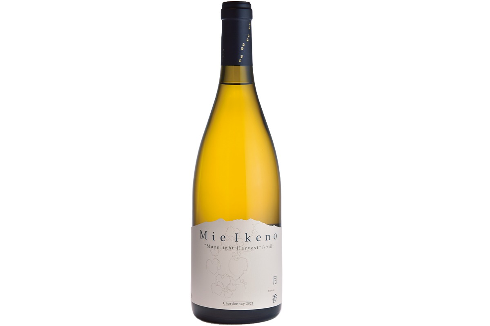
Ужин
Вертикальная дегустация мерло
В 2022 году полную коллекцию вин Domaine Mie Ikeno можно было найти только в RISONARE Yatsugatake. Зимой 2022–2023 года отель предлагал программу «Domaine Mie Ikeno: идеальное винное путешествие. Зима»: очень редкие вина прошлых урожаев подавали с блюдами, в которых чувствуется земля Яцугатакэ.
Вечер начинался у камина на террасе с бокала «Гэкко шардоне». Это вино делают из винограда, собранного глубокой ночью, когда прохладно: ягоды сразу идут в работу и сохраняют чистую кислоту и сахар.
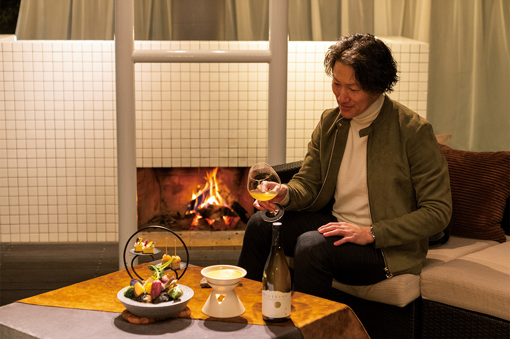
«Чистый, прозрачный фруктовый вкус и яркая кислотность. И цвет хорош, как полная луна»
винный эксперт
Ужин подавали в отдельном зале, и главным его событием стала вертикальная дегустация мерло трёх урожаев подряд.
«В последние годы погода сильно меняется от года к году, поэтому характер урожая проявляется особенно ярко. Здесь, говорят, бережно сохраняют индивидуальность каждого года, тем интереснее»
винный эксперт
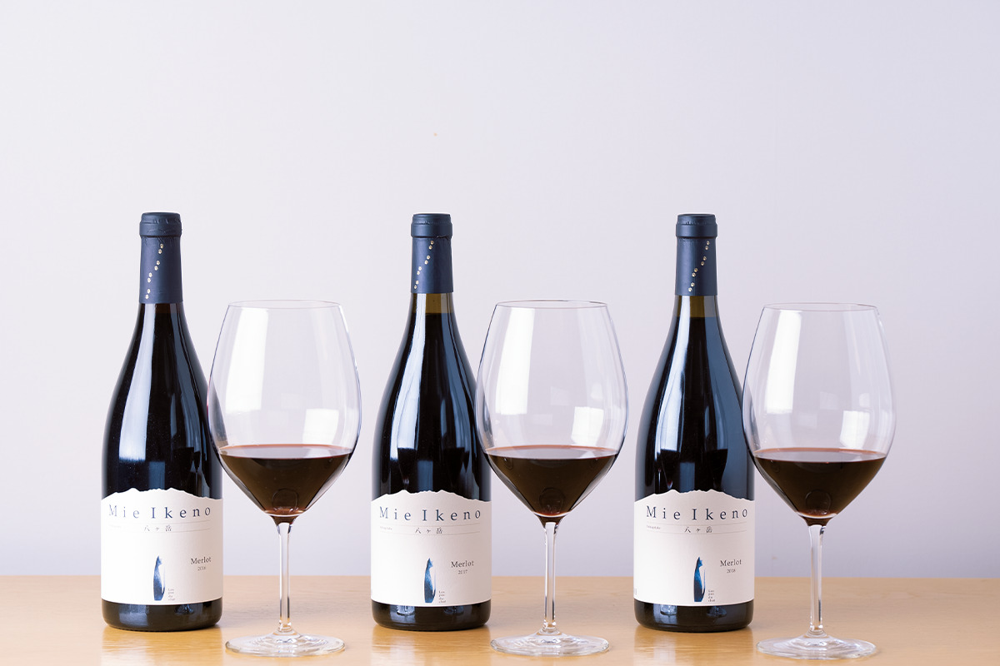
Кухня строилась на продуктах Яманаси и местных блюдах и подчёркивала характер каждого вина. Мерло 2016 года, в котором уже чувствуется выдержка и животные нотки, подавали с олениной, добытой в горах Яцугатакэ, и тушёным морским ушком (абалоном): это блюдо давно готовят в Яманаси.
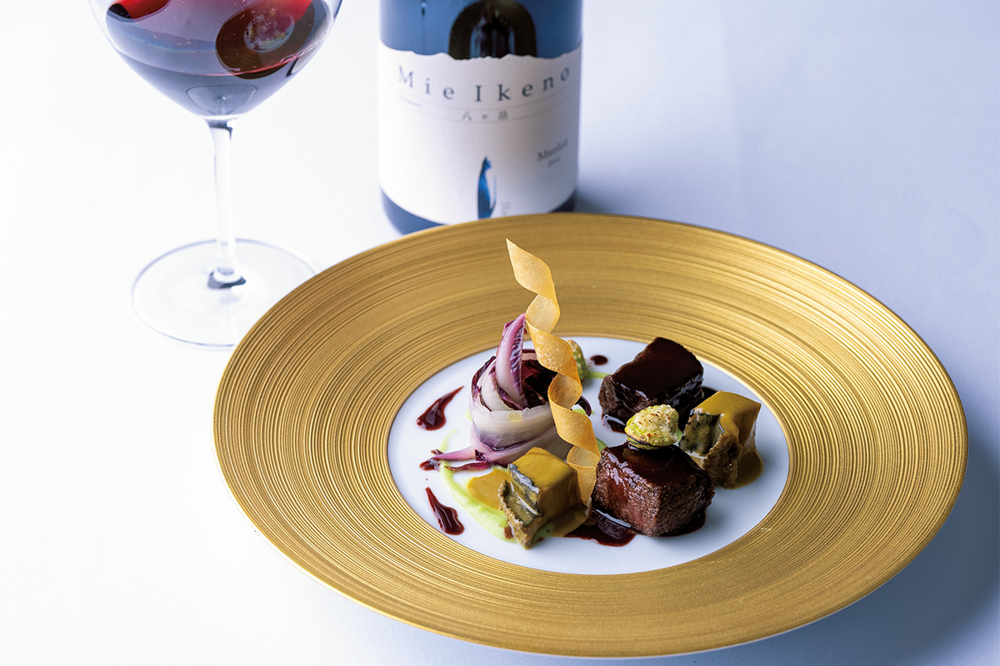
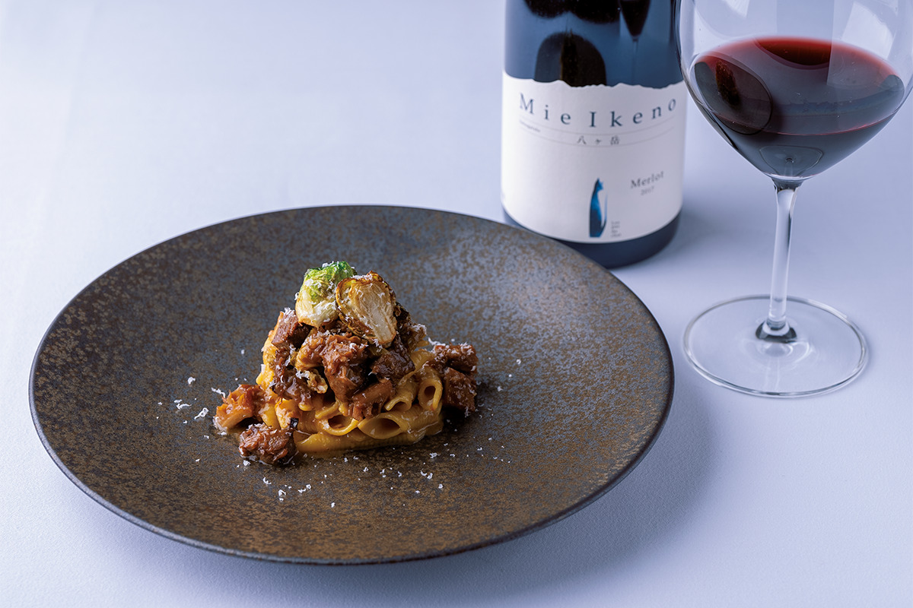
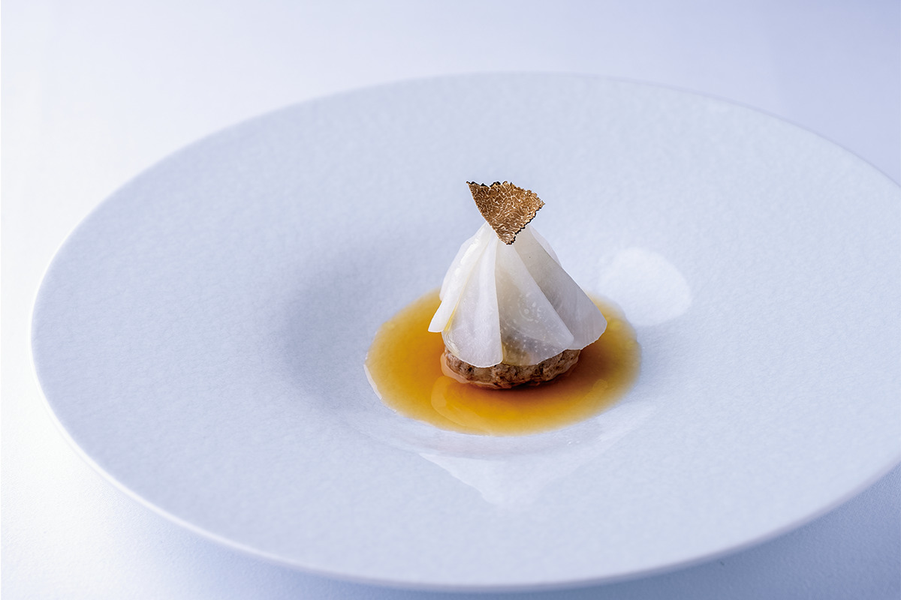
После ужина гостей ждала граппа в отдельной гостиной. Её делают, сбраживая и перегоняя кожицу и косточки винограда, оставшиеся после виноделия. Эксперт объясняет: одна граппа передаёт характер виноградника, другая долго стоит в бочке, как виски, и приобретает аромат дерева.
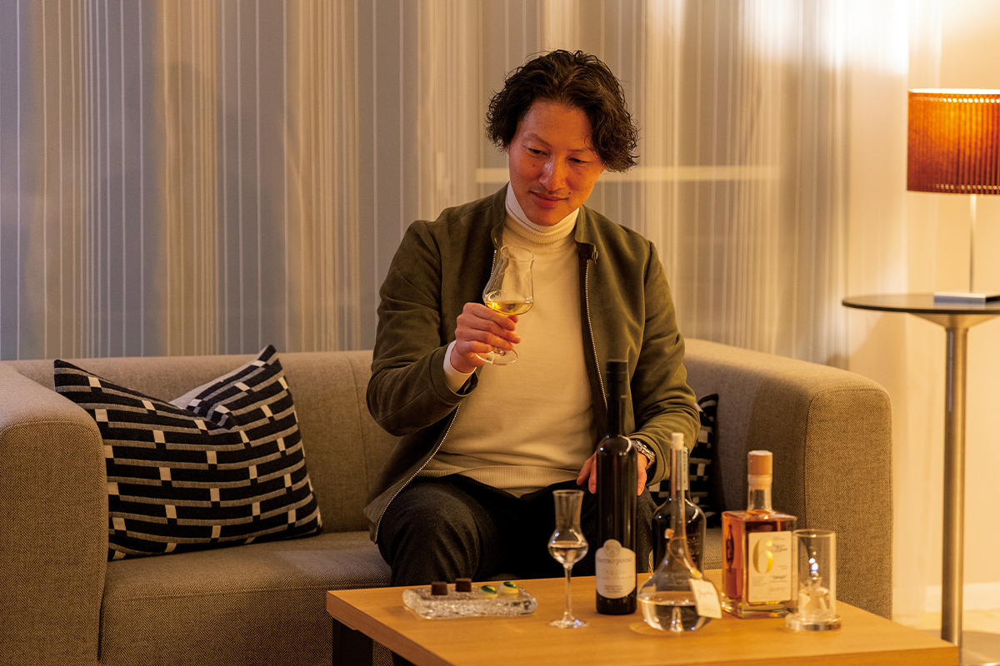
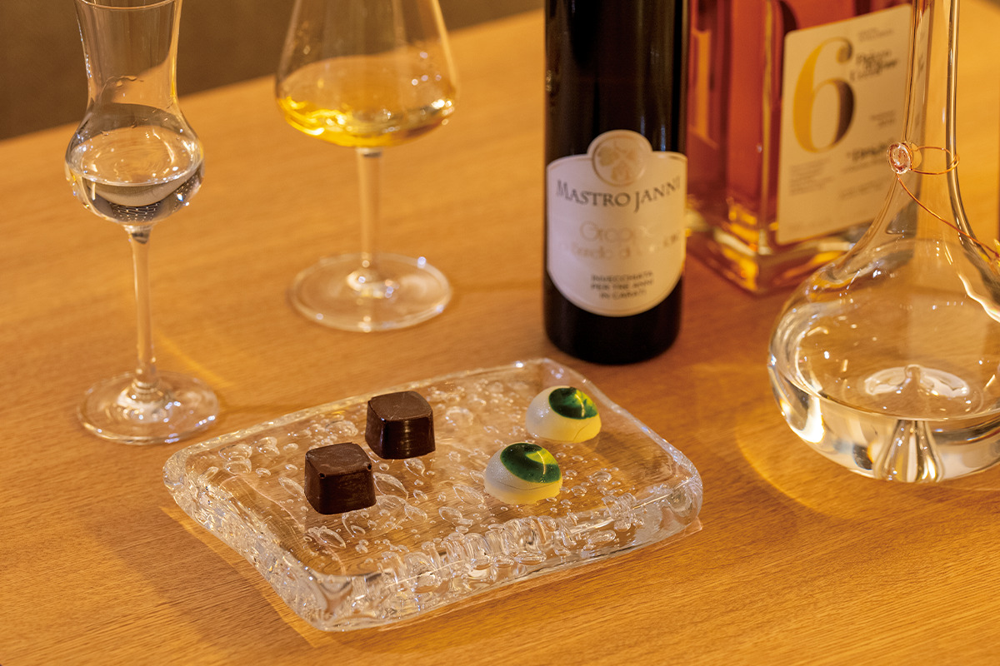
Номер
Три полубутылки в номере
Для этой программы отводили номер с жилой террасой, а в нём гостей ждали полубутылки Domaine Mie Ikeno трёх сортов. Завтрак подавали в номер, и к нему тоже можно было открыть вино.
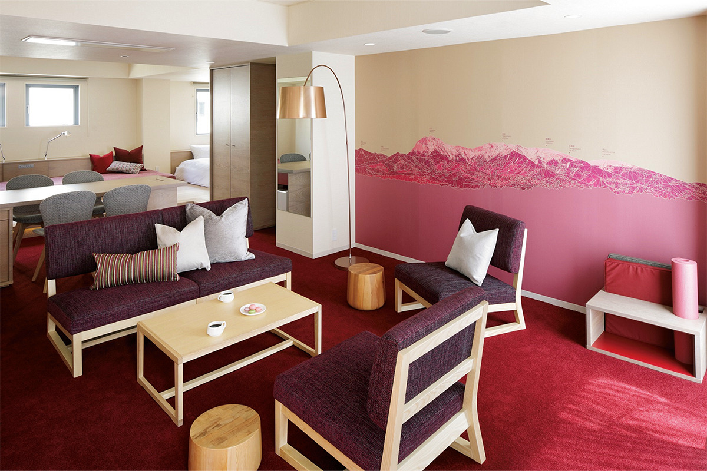
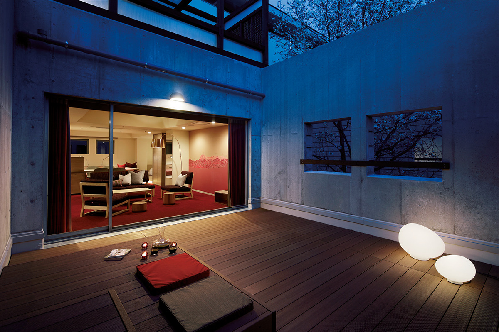
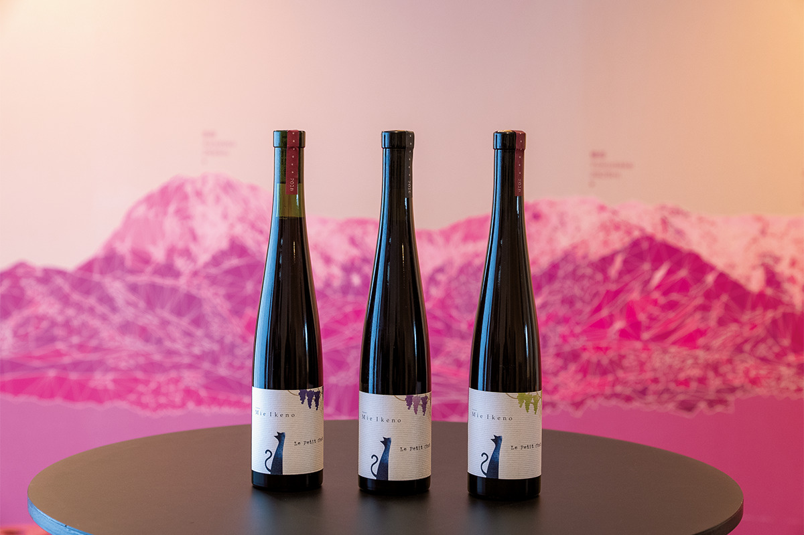
Программа 2022–2023 года шла по будним дням с 12 декабря 2022 года до 31 марта 2023 года, кроме отдельных дат. Она стоила от 102 550 иен на человека за ночь с ужином и завтраком, с налогом и сервисным сбором (цена 2022 года). Принимали одну группу в день, бронировать нужно было не позже чем за две недели.
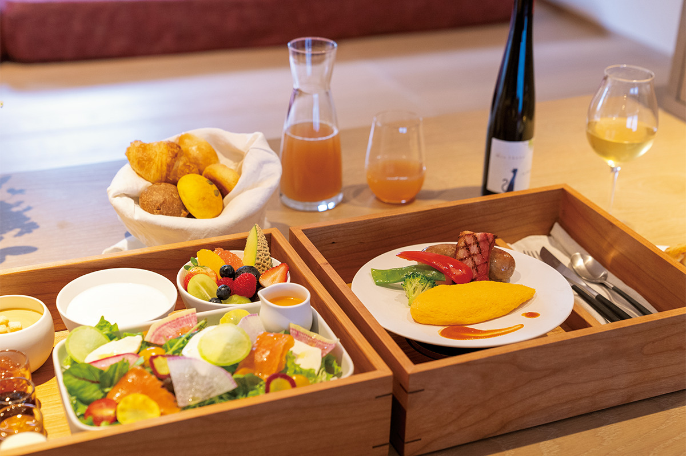
Попробовать местные вина можно и без особой программы. В 2022 году в винном магазине отеля «Яцугатакэ вайн хаус» всегда стояли 24 вина, отобранные на винодельнях Яманаси и Нагано, и их можно было дегустировать самому. Вина Domaine Mie Ikeno здесь продавали только гостям отеля, по одной бутылке на номер.
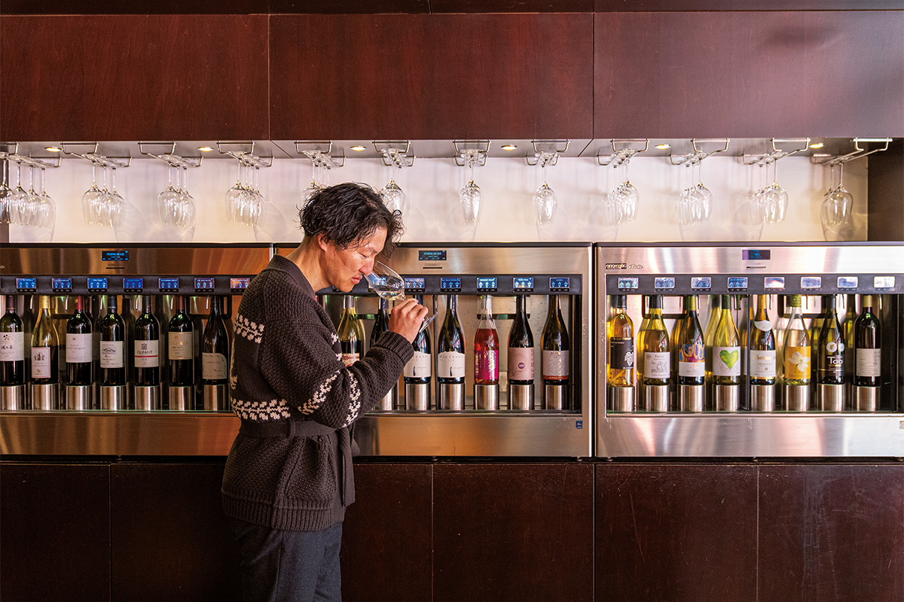
RISONARE Yatsugatake
- Адрес
- префектура Яманаси, Хокуто, Кобутидзава, 129-1
- Телефон
- +81 50-3134-8093 (9:30–18:00)
- Номера
- 172; рестораны, винный дом, бани, бассейн, спа
- Цены / Вход
- от 24 000 иен на человека за ночь с завтраком, с налогом и сервисным сбором
- Как добраться
- на машине около 5 минут от съезда Кобутидзава скоростной дороги Тюо; от станции Кобутидзава линии JR 5 минут на трансферном автобусе отеля
Фото: Ацуси Ямахира.